|
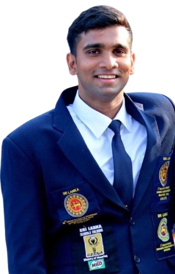
|
I am a Ph.D. student in Computer Science at Old Dominion University,
working with Dr. Dushan Wadduwage in the
Wadduwage Lab as a Graduate Research Assistant.
I graduated with First Class Honours in Electrical and Information Engineering from the
University of Ruhuna, Sri Lanka, with the highest OGPA in my batch (3.94/4.00).
Before my Ph.D., I worked as a software engineer at
Codegen International, building LLM applications,
RAG pipelines, and enterprise software.
My research sits at the intersection of applied machine learning, biomedical imaging, causal inference,
and natural language processing. I am especially interested in optical neural networks and differentiable
microscopy, out-of-distribution detection and trustworthy ML, AI for biomedical applications, and
domain-specific NLP.
Email /
CV /
Google Scholar /
GitHub /
LinkedIn /
ResearchGate /
X
|
|
Projects
Current and recent research directions.
|
|
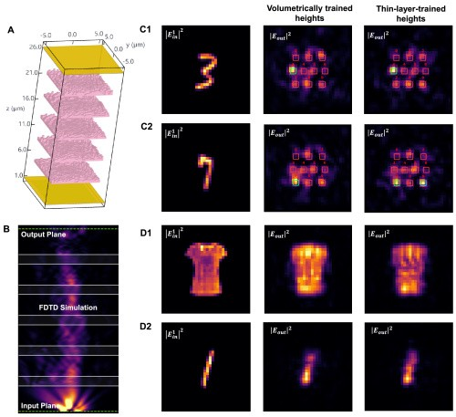 |
Optical Neural Networks
Compact and efficient optical neural networks that move part of the AI computation into the optical domain, so imaging and inference happen with lower latency and energy cost. This work sits in the Wadduwage Lab and connects to differentiable microscopy and biomedical imaging. Most recently: volumetric (∂BPM) training for visible-range diffractive networks, published in Optics Express.
|
|
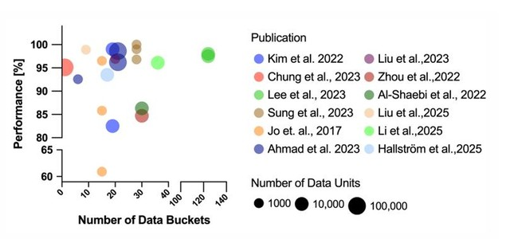 |
Trustworthy Machine Learning
Causal and hypothesis-driven methods that make deep learning more reliable in biomedical imaging, computer vision and NLP: out-of-distribution detection with permutation tests, and a Rubin causal model–based stochastic proof-by-contradiction test for model reliability. Applications include pathogen detection, lung-cancer cell profiling and DNA-damage screening.
|
|
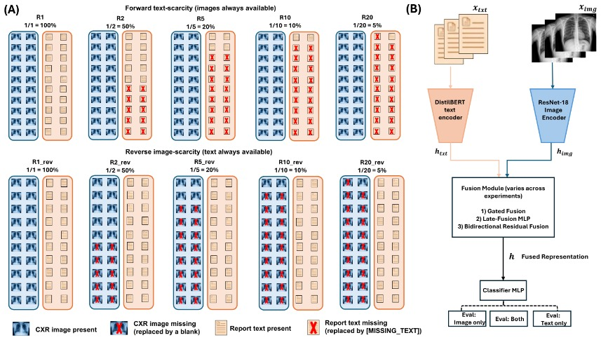 |
Multimodal Learning for Biomedicine
How multimodal models fail when one modality dominates, and practical multimodal screening systems for low-resource settings.
|
|
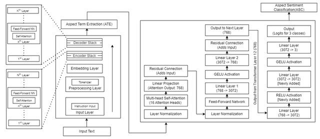 |
Natural Language Processing
Natural language processing for domain-specific text. My bachelor's thesis and follow-up papers focus on aspect-based sentiment analysis (ABSA) for reviews and other textual feedback: category extraction, the hybrid Instruct-DeBERTa model, and comparative studies of ABSA methods, with publications at PACLIC, WiNLP @ EMNLP, MERCon and ICTer. More recently, SentimentLens (IEEE IRI 2026) reconciles what hotel reviews say with the ratings they give.
|
|
Research
Publications and preprints. A full list is on Google Scholar.
|
|
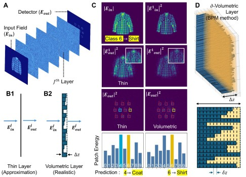 |
Beyond the Thin-Layer Limit: Differentiable Volumetric Training for Visible-Range Diffractive Neural Networks
Dineth Jayakody, Dushan N. Wadduwage
Optics Express 2026, Vol. 34, Issue 23, pp. 43118
paper |
pdf |
supplement |
DOI |
abstract |
bibtex
Diffractive deep neural networks (D2NNs) could provide compact, power-efficient optical front-ends for machine vision, but visible-range systems remain less experimentally mature than terahertz demonstrations. A key modeling challenge is the thin-layer approximation commonly used during training, which neglects field evolution within finite-thickness relief structures. We introduce a differentiable beam-propagation (∂BPM) layer that represents each diffractive element as a finite-thickness volume while preserving end-to-end trainability without full-wave simulation in the training loop. After accounting for axial-reference-plane alignment and simple global calibration effects, the thin and volumetric descriptions converge for sufficiently thin reliefs, while task-dependent residual mismatch remains as thickness increases, especially for imaging and lower-index structures. Volumetric fine-tuning reduces this residual, and same-structure FDTD comparisons show that ∂BPM follows the full-wave field more closely than the thin-layer approximation. These results establish ∂BPM as a more faithful differentiable forward model for finite-thickness D2NN design while identifying regimes where the thin approximation remains adequate.
@article{jayakody2026thinlayer,
title = {Beyond the Thin-Layer Limit: Differentiable Volumetric Training for Visible-Range Diffractive Neural Networks},
author = {Jayakody, Dineth and Wadduwage, Dushan N.},
journal = {Optics Express},
volume = {34},
number = {23},
pages = {43118},
year = {2026},
publisher = {Optica Publishing Group},
doi = {10.1364/OE.609758}
}
A differentiable beam-propagation (∂BPM) layer that models each diffractive element as a finite-thickness volume; in same-structure FDTD comparisons it follows the full-wave field more closely than the thin-layer approximation.
|
|
|
When Multimodal Models Stop Listening: Modality Imbalance Induces Dominant-Modality Bias in Biomedicine
Dineth Jayakody, Dushan N. Wadduwage
MMFM-BIOMED Workshop @ CVPR 2026
workshop |
bibtex
@inproceedings{jayakody2026modality,
title = {When Multimodal Models Stop Listening: Modality Imbalance Induces Dominant-Modality Bias in Biomedicine},
author = {Jayakody, Dineth and Wadduwage, Dushan},
booktitle = {MMFM-BIOMED Workshop at CVPR},
year = {2026}
}
Shows that modality imbalance in training data pushes biomedical multimodal models to rely on the dominant modality and stop using the others.
|
|
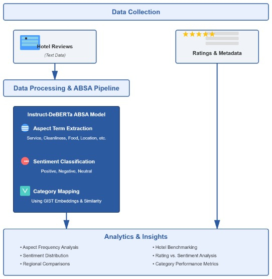 |
SentimentLens: Reconciling Sentiment and Ratings via Dual-Modality in the Hospitality Sector
Dineth Jayakody, Pasindu Thenahandi, Sampath Jayarathna
IEEE IRI 2026, pp. 350–355
IEEE Xplore |
DOI |
bibtex
@inproceedings{jayakody2026sentimentlens,
title = {SentimentLens: Reconciling Sentiment and Ratings via Dual-Modality in the Hospitality Sector},
author = {Jayakody, Dineth and Thenahandi, Pasindu and Jayarathna, Sampath},
booktitle = {2026 IEEE International Conference on Information Reuse and Integration for Data Science (IRI)},
pages = {350--355},
year = {2026},
publisher = {IEEE},
doi = {10.1109/IRI69576.2026.00072}
}
A dual-modality approach that reconciles what hotel reviews say with the star ratings they give.
|
|
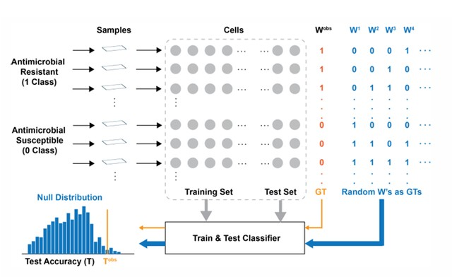 |
Beyond Perfect Scores: Proof-by-Contradiction for Trustworthy Machine Learning
Dushan N. Wadduwage, Dineth Jayakody, Leonidas Zimianitis
Gordon Research Conference on Optics and Photonics in Medicine and Biology 2026 (poster)
arXiv 2026
pdf |
arXiv |
code |
abstract |
bibtex
Machine learning (ML) models show strong promise for new biomedical prediction tasks, but concerns about trustworthiness have hindered their clinical adoption. In particular, it is often unclear whether a model relies on true clinical cues or on spurious hierarchical correlations in the data. This paper introduces a simple yet broadly applicable trustworthiness test grounded in stochastic proof-by-contradiction. Instead of just showing high test performance, our approach trains and tests on spurious labels carefully permuted based on a potential outcomes framework. A truly trustworthy model should fail under such label permutation; comparable accuracy across real and permuted labels indicates overfitting, shortcut learning, or data leakage. Our approach quantifies this behavior through interpretable Fisher-style p-values, which are well understood by domain experts across medical and life sciences. We evaluate our approach on multiple new bacterial diagnostics to separate tasks and models learning genuine causal relationships from those driven by dataset artifacts or statistical coincidences. Our work establishes a foundation to build rigor and trust between ML and life-science research communities, moving ML models one step closer to clinical adoption.
@inproceedings{wadduwage2026beyond,
title = {Beyond Perfect Scores: Proof-by-Contradiction for Trustworthy Machine Learning},
author = {Wadduwage, Dushan and Jayakody, Dineth and Zimianitis, Leonidas},
booktitle = {Gordon Research Conference on Optics and Photonics in Medicine and Biology},
year = {2026}
}
A permutation-based trustworthiness test: retrain under bucket-level label permutations and report a Fisher-style p-value, so a model that scores well on spurious labels is caught.
|
|
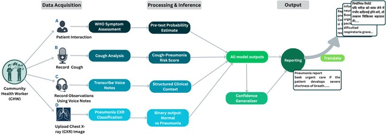 |
MultiSense-Pneumo: A Multimodal Learning Framework for Pneumonia Screening in Resource-Constrained Settings
Dineth Jayakody, Pasindu Thenahandi, Chameli Dilshani Menike Dommanige, Michael Pokojovy, Henry Han
Southwest Data Science Conference (SDSC) 2026, Springer proceedings
arXiv 2026
pdf |
arXiv |
abstract |
bibtex
Pneumonia remains a leading global cause of morbidity and mortality, particularly in low-resource settings where access to imaging, laboratory testing, and specialist care is limited. Clinical assessment relies on heterogeneous evidence, including symptoms, respiratory patterns, spoken descriptions, and chest imaging, making frontline screening inherently multimodal. However, many existing computational approaches remain unimodal and focus primarily on radiographs. In this work, we present MultiSense-Pneumo, a multimodal research prototype for pneumonia-oriented screening and triage support that integrates structured symptom descriptors, cough audio, spoken language, and chest radiographs. The system combines deterministic symptom triage, LightGBM-based acoustic classification, domain-adversarial radiograph analysis using ResNet-18, transformer-based speech recognition, and an interpretable late-fusion operator. Each modality is transformed into a normalized concern signal and aggregated into a unified screening estimate. The fusion weights are hand-specified and are treated as heuristic, interpretable parameters rather than learned or clinically optimized values. MultiSense-Pneumo is implemented with offline execution in mind on standard laptop-class hardware, but it is not presented as a deployment-validated or clinically validated diagnostic system. Experimental results demonstrate strong component-level performance of the radiograph pathway under synthetic domain shifts, while also highlighting important limitations, especially reduced abnormal-class recall for cough acoustics and the absence of paired end-to-end multimodal patient evaluation. MultiSense-Pneumo is therefore intended as a framework and component-level prototype for screening and triage research.
@inproceedings{jayakody2026multisense,
title = {MultiSense-Pneumo: A Multimodal Learning Framework for Pneumonia Screening in Resource-Constrained Settings},
author = {Jayakody, Dineth and Thenahandi, Pasindu and Dommanige, Chameli Dilshani Menike and Pokojovy, Michael and Han, Henry},
booktitle = {Springer proceedings of SDSC},
year = {2026}
}
A multimodal screening and triage prototype that fuses symptom triage, cough audio, spoken notes and chest X-rays into one interpretable pneumonia-concern estimate, built to run offline on a laptop.
|
|
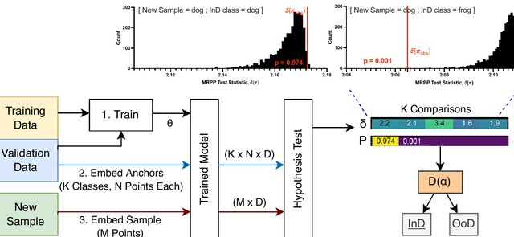 |
Thinking in Groups: Permutation Tests Reveal Near-Out-of-Distribution
Yasith Jayawardana, Dineth Jayakody, Sampath Jayarathna, Dushan N. Wadduwage
Under review at ACM Transactions on Probabilistic Machine Learning
arXiv
pdf |
arXiv |
abstract |
bibtex
Deep neural networks (DNNs) have the potential to power many biomedical workflows, but training them on truly representative, IID datasets is often infeasible. Most models instead rely on biased or incomplete data, making them prone to out-of-distribution (OoD) inputs that closely resemble in-distribution samples. Such near-OoD cases are harder to detect than standard OOD benchmarks and can cause unreliable, even catastrophic, predictions. Biomedical assays, however, offer a unique opportunity: they often generate multiple correlated measurements per specimen through biological or technical replicates. Exploiting this insight, we introduce Homogeneous OoD (HOoD), a novel OoD detection framework for correlated data. HOoD projects groups of correlated measurements through a trained model and uses permutation-based hypothesis tests to compare them with known subpopulations. Each test yields an interpretable p-value, quantifying how well a group matches a subpopulation. By aggregating these p-values, HOoD reliably identifies OoD groups. In evaluations, HOoD consistently outperforms point-wise and ensemble-based OoD detectors, demonstrating its promise for robust real-world deployment.
@article{jayawardana2026thinking,
title = {Thinking in Groups: Permutation Tests Reveal Near-Out-of-Distribution},
author = {Jayawardana, Yasith and Jayakody, Dineth and Jayarathna, Sampath and Wadduwage, Dushan},
journal = {Under review at ACM Transactions on Probabilistic Machine Learning},
year = {2026}
}
HOoD: passes groups of correlated measurements (biological or technical replicates) through a trained model and uses permutation tests against known subpopulations to flag near-out-of-distribution groups.
|
|
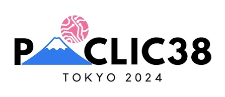 |
Enhanced Aspect-Based Sentiment Analysis with Integrated Category Extraction for Instruct-DeBERTa
Dineth Jayakody, Koshila Isuranda, Ava Malkith, Nisansa de Silva, Sachintha Rajith Ponnamperuma, G.G.N. Sandamali, K.L.K. Sudheera, Kashnika Gimhani Sarathchandra
PACLIC 2024, Tokyo, Japan
pdf |
ACL Anthology |
code |
bibtex
@inproceedings{jayakody2024paclic,
title = {Enhanced Aspect-Based Sentiment Analysis with Integrated Category Extraction for Instruct-DeBERTa},
author = {Jayakody, D.S. and Isuranda, K. and de Silva, N. and Sandamali, G.G.N. and Sudheera, K.L.K. and Rajith, S.},
booktitle = {38th Pacific Asia Conference on Language, Information and Computation (PACLIC)},
year = {2024},
address = {Tokyo, Japan}
}
Extends Instruct-DeBERTa with aspect-category extraction, so one pipeline extracts aspect terms, categories and their sentiment.
|
|
|
Instruct-DeBERTa: A Hybrid Approach for Enhanced Aspect-Based Sentiment Analysis with Category Extraction
Dineth Jayakody, Koshila Isuranda, Nisansa de Silva, G.G.N. Sandamali, K.L.K. Sudheera, Sachintha Rajith Ponnamperuma
Widening NLP Workshop (WiNLP) @ EMNLP 2024, Florida, USA
pdf |
OpenReview |
bibtex
@inproceedings{jayakody2024winlp,
title = {{Instruct-DeBERTa}: A Hybrid Approach for Enhanced Aspect-Based Sentiment Analysis with Category Extraction},
author = {Jayakody, D.S. and Isuranda, K. and de Silva, N. and Sandamali, G.G.N. and Sudheera, K.L.K. and Rajith, S.},
booktitle = {Eighth Widening NLP Workshop (WiNLP 2024) Phase II at EMNLP},
year = {2024},
address = {Florida, USA}
}
Hybrid ABSA model: InstructABSA for aspect-term extraction and a DeBERTa-V3 classifier for aspect sentiment.
|
|
|
Aspect-based Sentiment Analysis Techniques: A Comparative Study
Dineth Jayakody, Koshila Isuranda, A.V.A. Malkith, Nisansa de Silva, Sachintha Rajith Ponnamperuma, G.G.N. Sandamali, K.L.K. Sudheera
MERCon 2024, IEEE
IEEE Xplore |
bibtex
@inproceedings{jayakody2024mercon,
title = {Aspect-based Sentiment Analysis Techniques: A Comparative Study},
author = {Jayakody, D.S. and Isuranda, K. and Malkith, A.V.A. and De Silva, N. and Ponnamperuma, S.R. and Sandamali, G.G.N. and Sudheera, K.L.K.},
booktitle = {2024 Moratuwa Engineering Research Conference (MERCon)},
pages = {205--210},
year = {2024},
publisher = {IEEE}
}
A comparative study of techniques for aspect-based sentiment analysis.
|
|
|
Instruct-DeBERTa: A Hybrid Approach for Aspect-based Sentiment Analysis on Textual Reviews
Dineth Jayakody, A.V.A. Malkith, Koshila Isuranda, Vishal Thenuwara, Nisansa de Silva, Sachintha Rajith Ponnamperuma, G.G.N. Sandamali, K.L.K. Sudheera
International Journal on Advances in ICT for Emerging Regions (ICTer)
journal |
bibtex
@article{jayakody2024icter,
title = {{Instruct-DeBERTa}: A Hybrid Approach for Aspect-based Sentiment Analysis on Textual Reviews},
author = {Jayakody, D.S. and Malkith, A.V.A. and Isuranda, K. and Thenuwara, V. and de Silva, N. and Ponnamperuma, S.R. and Sandamali, G.G.N. and Sudheera, K.L.K.},
journal = {The International Journal on Advances in ICT for Emerging Regions (ICTer)},
year = {2024}
}
Journal version: reviews the evolution of ABSA methods and reports Instruct-DeBERTa as the best joint extraction-and-classification model on the SemEval 2014 restaurant and laptop datasets.
|
|
|
MCQ Automated Grading Using Image Processing Techniques
Koshila Isuranda, Dineth Jayakody, A.V.A. Malkith
YMS Technical Conference 2024
paper |
code |
bibtex
@inproceedings{isuranda2024mcq,
title = {MCQ Automated Grading Using Image Processing Techniques},
author = {Isuranda, K. and Jayakody, D.S. and Malkith, A.V.A.},
booktitle = {YMS Technical Conference},
year = {2024}
}
An optical mark recognition pipeline that grades scanned multiple-choice answer sheets automatically.
|
|
|
GradesGo: A Comprehensive Practical Framework for Calculating Grade One Admission Marks
G.S.S.S. Ganegoda, Dineth Jayakody, M.A.K. Isuranda, G. Priyankara
Academic Sessions and Vice Chancellor's Awards, University of Ruhuna 2024
code |
bibtex
@inproceedings{ganegoda2024gradesgo,
title = {{GradesGo} -- A Comprehensive Practical Framework for Calculating Grade One Admission Marks},
author = {Ganegoda, G.S.S.S. and Jayakody, D.S. and Isuranda, M.A.K. and Priyankara, G.},
booktitle = {Academic Sessions and Vice Chancellor's Awards, University of Ruhuna},
year = {2024}
}
A web system that automates Sri Lankan Grade 1 school-admission marking, including map-based distance checks.
|
|